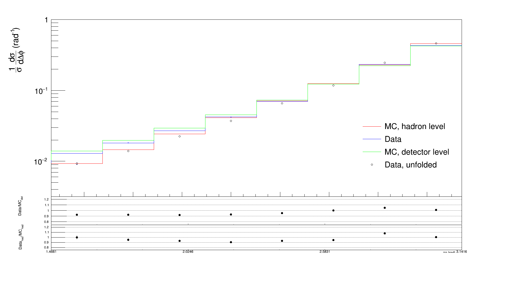
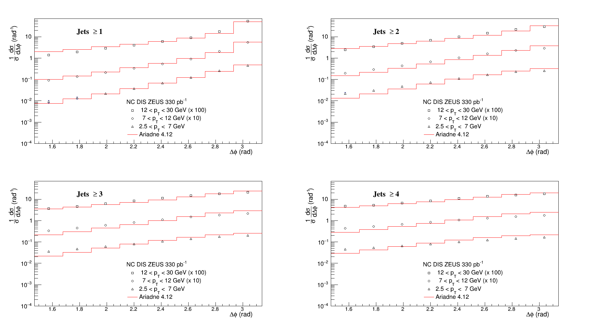
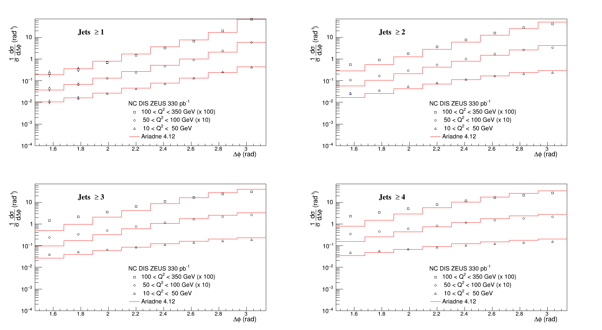
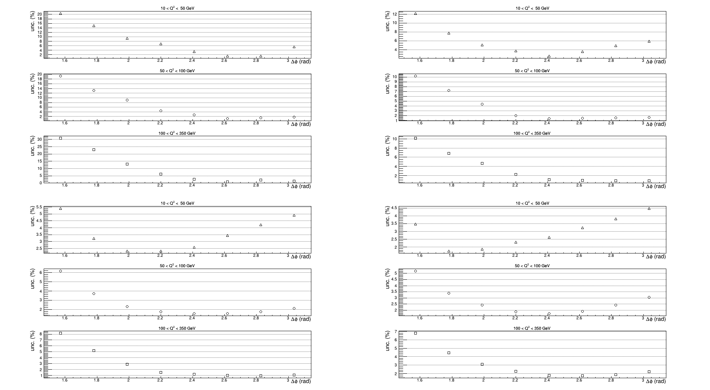

Measurement of the azimuthal decorrelation angle
between the leading jet and scattered lepton
in deep inelastic scattering at HERA
Integrated over full kinematic range

PT binning

Total uncertainties

Q2 binning

Total uncertainties

For migration, covariance and correlation matrices for differet regions see: